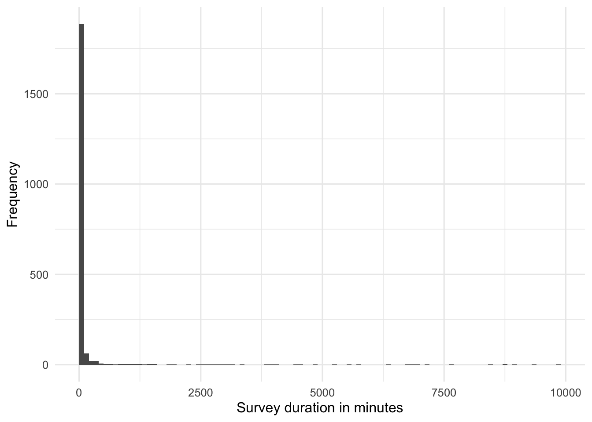
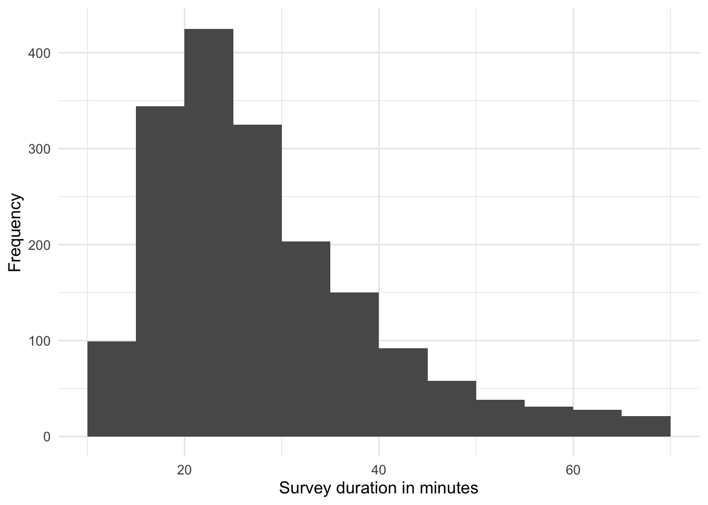
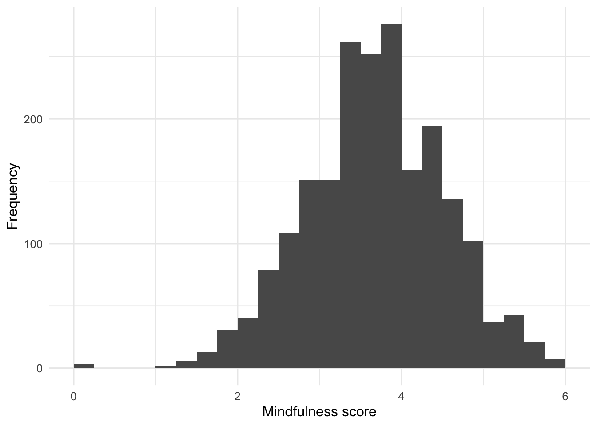

source("scripts/_setup.R")Chapter 9: One-Sample Designs
One-sample t tests, effect size, and confidence intervals
Compare an observed mean with a known or expected value.
Chapter 9 of Exploring Statistics introduces one-sample designs. You will compare a sample mean with a known or expected value while practicing an important habit: pause and look at the data before trusting an inferential test.
Learning Goals
By the end of this chapter, you should be able to:
- write null and alternative hypotheses for a one-sample design;
- choose a directional or non-directional alternative hypothesis;
- conduct and interpret a one-sample t test.
Research Questions
- The EAMMi2 consent form estimated that the study would take 30 minutes. Was that a reasonable estimate?
- Are emerging adults significantly different in mindfulness from Zen practitioners? What about undergraduate students?
Research Question 1: Survey Duration
We want to know whether the average time participants took to complete the EAMMi2 survey is significantly different from 30 minutes.
Get Ready
Open 09-one-sample-designs.R from the scripts folder. Run the shared setup line first, and then run the script one section at a time.
The analysis uses Duration, the number of minutes a participant took to finish the survey. Review it in Understanding EAMMi2.
Predict
Before you see the sample mean:
- Write the null and alternative hypotheses in words and statistical notation.
- Identify the comparison value.
- Decide whether the alternative should be directional or non-directional.
- Predict whether survey duration will be roughly symmetric or positively skewed.
The research question asks whether the mean is different from 30, without naming a direction. We will therefore use a two-tailed test with a comparison value of 30.
Run
Run the one-sample t test.
duration_first_test <- t.test(
eammi$Duration,
mu = 30,
alternative = "two.sided"
)
duration_first_test
One Sample t-test
data: eammi$Duration
t = 7.1859, df = 2072, p-value = 9.274e-13
alternative hypothesis: true mean is not equal to 30
95 percent confidence interval:
120.9337 189.1970
sample estimates:
mean of x
155.0654 t.test() conducts the test. eammi$Duration selects the Duration variable from the eammi data frame. mu = 30 supplies the comparison value, and alternative = "two.sided" represents a non-directional alternative hypothesis.
Do not interpret the test yet. First, examine the variable.
duration_first_summary <- eammi |>
summarise(
N = n(),
Mean = mean(Duration),
Median = median(Duration),
SD = sd(Duration),
Minimum = min(Duration),
Q1 = quantile(Duration, 0.25),
Q3 = quantile(Duration, 0.75),
IQR = IQR(Duration),
Maximum = max(Duration),
Skewness = sample_skewness(Duration)
)
duration_first_summary# A tibble: 1 × 10
N Mean Median SD Minimum Q1 Q3 IQR Maximum Skewness
<int> <dbl> <dbl> <dbl> <dbl> <dbl> <dbl> <dbl> <dbl> <dbl>
1 2073 155. 27.3 792. 10.2 20.8 40.4 19.6 9887. 8.70sample_skewness() is supplied by the setup file. It calculates a distribution’s skewness.
eammi |>
ggplot(aes(x = Duration)) +
geom_histogram(binwidth = 100, boundary = 0) +
labs(
x = "Survey duration in minutes",
y = "Frequency"
)
Investigate
Does anything seem odd? Compare the mean with the median, inspect the standard deviation and maximum, and describe the histogram. A survey duration measured in the thousands of minutes deserves a second look.
The mean is much larger than the median, the standard deviation is extremely large, and the histogram has a long right tail. The initial distribution is strongly positively skewed. An important assumption of many statistical analyses, including t tests, is that the dependent variable is normally distributed. These data are not normally distributed, which means the results from our first t test will be misleading. We should not interpret or report that first test.
The next step is not to set unusual scores aside automatically. It is to identify potential outliers, decide what they represent, and state any decision we make.
Use the IQR boundaries:
\[ \text{Lower boundary} = Q1 - (1.5 \times IQR) \]
\[ \text{Upper boundary} = Q3 + (1.5 \times IQR) \]
duration_bounds <- eammi |>
summarise(
Q1 = quantile(Duration, 0.25),
Q3 = quantile(Duration, 0.75),
IQR = IQR(Duration),
LowerBoundary = Q1 - (1.5 * IQR),
UpperBoundary = Q3 + (1.5 * IQR)
)
duration_bounds# A tibble: 1 × 5
Q1 Q3 IQR LowerBoundary UpperBoundary
<dbl> <dbl> <dbl> <dbl> <dbl>
1 20.8 40.4 19.6 -8.59 69.7The lower boundary is negative, and survey duration cannot be negative. The upper boundary is a little under 70 minutes. For this demonstration, we will set aside durations above that boundary and state that decision in the final report.
Screen And Reanalyze
Store the upper boundary and use it to create a new data frame. The original eammi object remains unchanged.
duration_upper_boundary <- duration_bounds$UpperBoundary
duration_no_outliers <- eammi |>
filter(Duration <= duration_upper_boundary)filter() keeps observations that meet the condition. Reuse the descriptive code with duration_no_outliers as the data frame.
duration_filtered_summary <- duration_no_outliers |>
summarise(
N = n(),
Mean = mean(Duration),
Median = median(Duration),
SD = sd(Duration),
Minimum = min(Duration),
Q1 = quantile(Duration, 0.25),
Q3 = quantile(Duration, 0.75),
IQR = IQR(Duration),
Maximum = max(Duration),
Skewness = sample_skewness(Duration)
)
duration_filtered_summary# A tibble: 1 × 10
N Mean Median SD Minimum Q1 Q3 IQR Maximum Skewness
<int> <dbl> <dbl> <dbl> <dbl> <dbl> <dbl> <dbl> <dbl> <dbl>
1 1814 28.4 25.5 11.7 10.2 20.1 34.0 14.0 69.2 1.20duration_no_outliers |>
ggplot(aes(x = Duration)) +
geom_histogram(binwidth = 5, boundary = 0) +
labs(
x = "Survey duration in minutes",
y = "Frequency"
)
The distribution still has a slight positive skew, but the skewness statistic is now within the guideline of -2.00 to +2.00. Run the final test on the modified data frame.
duration_final_test <- t.test(
duration_no_outliers$Duration,
mu = 30,
alternative = "two.sided"
)
duration_final_test
One Sample t-test
data: duration_no_outliers$Duration
t = -5.8678, df = 1813, p-value = 5.24e-09
alternative hypothesis: true mean is not equal to 30
95 percent confidence interval:
27.85437 28.92939
sample estimates:
mean of x
28.39188 The confidence interval printed by t.test() is for the sample mean. The research question concerns the difference from 30, so subtract 30 from both confidence limits.
Calculate Cohen’s d
cohens_d() is a workbook helper first introduced here and supplied by the setup file. For a one-sample design, it calculates Cohen’s d by dividing the mean difference by the sample standard deviation.
duration_mean_difference <- mean(duration_no_outliers$Duration) - 30
duration_difference_ci <- duration_final_test$conf.int - 30
duration_d <- cohens_d(
duration_mean_difference,
sd(duration_no_outliers$Duration)
)
duration_mean_difference[1] -1.608122duration_difference_ci[1] -2.145630 -1.070614
attr(,"conf.level")
[1] 0.95duration_d[1] -0.1377695Produce
Write an interpretation that includes:
- the comparison value and the data decision;
- the sample mean and standard deviation;
- t, degrees of freedom, and p;
- Cohen’s d and its magnitude;
- the confidence interval for the mean difference; and
- a conclusion in the context of survey duration.
Research Question 2: Mindfulness
Mindfulness is the tendency to focus on the present moment without judging one’s experiences. Brown and Ryan (2003) reported a mean mindfulness score of 4.29 for Zen practitioners and 3.85 for undergraduate students using the Mindful Attention Awareness Scale. The same measure is named Mindfulness in the EAMMi2 data.
Are emerging adults significantly different from Zen practitioners on mindfulness? What about undergraduate students?
Predict
Write a null and alternative hypothesis for each comparison in words and notation. Both questions ask whether the means are different, so identify the correct two-tailed alternative.
Run
Copy the descriptive summary and histogram pattern from Research Question 1. Replace Duration with Mindfulness, use an informative object name, and choose a bin width that shows the distribution clearly.
Investigate
Use the mean, median, skewness, and histogram to decide whether the distribution is close enough to normal for this analysis. Do not apply the duration boundary to a different variable.
Run The Comparisons
Copy the final t.test() pattern twice. In the first copy, use mu = 4.29. In the second, use mu = 3.85. Create distinct object names, mean differences, confidence intervals, and Cohen’s d values.
Produce
Write a separate interpretation for each comparison. Explain which group had the higher mean and describe the magnitude of the difference.
Check Your Work
Research Question 1
\[ H_0: \mu = 30 \]
The average EAMMi2 survey duration does not differ from 30 minutes.
\[ H_1: \mu \neq 30 \]
The average EAMMi2 survey duration differs from 30 minutes.
A one-sample t test revealed a significant difference between the average time participants took to complete the EAMMi2 survey (M = 28.39 minutes, SD = 11.67) and the 30-minute estimate in the informed consent form, t(1813) = -5.87, p < .001, d = -0.14, 95% CI [-2.15, -1.07]. Potential upper outliers above the IQR boundary were set aside before this final analysis. On average, participants took less time than expected, although the magnitude of the difference was small.
Research Question 2
For the Zen-practitioner comparison:
\[ H_0: \mu = 4.29 \]
The mean mindfulness score for emerging adults does not differ from 4.29.
\[ H_1: \mu \neq 4.29 \]
The mean mindfulness score for emerging adults differs from 4.29.
For the undergraduate comparison:
\[ H_0: \mu = 3.85 \]
The mean mindfulness score for emerging adults does not differ from 3.85.
\[ H_1: \mu \neq 3.85 \]
The mean mindfulness score for emerging adults differs from 3.85.
Check the distribution first.
mindfulness_summary <- eammi |>
summarise(
N = n(),
Mean = mean(Mindfulness),
Median = median(Mindfulness),
SD = sd(Mindfulness),
Minimum = min(Mindfulness),
Maximum = max(Mindfulness),
Skewness = sample_skewness(Mindfulness)
)
mindfulness_summary# A tibble: 1 × 7
N Mean Median SD Minimum Maximum Skewness
<int> <dbl> <dbl> <dbl> <dbl> <dbl> <dbl>
1 2073 3.69 3.73 0.839 0 6 -0.159eammi |>
ggplot(aes(x = Mindfulness)) +
geom_histogram(binwidth = 0.25, boundary = 0) +
labs(
x = "Mindfulness score",
y = "Frequency"
)
Mindfulness is close to normally distributed.
For the Zen-practitioner comparison:
mindfulness_zen_test <- t.test(
eammi$Mindfulness,
mu = 4.29,
alternative = "two.sided"
)
mindfulness_zen_difference <- mean(eammi$Mindfulness) - 4.29
mindfulness_zen_ci <- mindfulness_zen_test$conf.int - 4.29
mindfulness_zen_d <- cohens_d(
mindfulness_zen_difference,
sd(eammi$Mindfulness)
)
mindfulness_zen_test
One Sample t-test
data: eammi$Mindfulness
t = -32.651, df = 2072, p-value < 2.2e-16
alternative hypothesis: true mean is not equal to 4.29
95 percent confidence interval:
3.652204 3.724480
sample estimates:
mean of x
3.688342 mindfulness_zen_ci[1] -0.6377955 -0.5655201
attr(,"conf.level")
[1] 0.95mindfulness_zen_d[1] -0.7171186Zen practitioners had higher mindfulness (M = 4.29) than emerging adults (M = 3.69, SD = 0.84), t(2072) = -32.65, p < .001, d = -0.72, 95% CI [-0.64, -0.57]. The difference was medium-to-large.
For the undergraduate comparison:
mindfulness_undergraduate_test <- t.test(
eammi$Mindfulness,
mu = 3.85,
alternative = "two.sided"
)
mindfulness_undergraduate_difference <- mean(eammi$Mindfulness) - 3.85
mindfulness_undergraduate_ci <- mindfulness_undergraduate_test$conf.int - 3.85
mindfulness_undergraduate_d <- cohens_d(
mindfulness_undergraduate_difference,
sd(eammi$Mindfulness)
)
mindfulness_undergraduate_test
One Sample t-test
data: eammi$Mindfulness
t = -8.7728, df = 2072, p-value < 2.2e-16
alternative hypothesis: true mean is not equal to 3.85
95 percent confidence interval:
3.652204 3.724480
sample estimates:
mean of x
3.688342 mindfulness_undergraduate_ci[1] -0.1977955 -0.1255201
attr(,"conf.level")
[1] 0.95mindfulness_undergraduate_d[1] -0.1926807Undergraduate students had higher mindfulness (M = 3.85) than emerging adults (M = 3.69, SD = 0.84), t(2072) = -8.77, p < .001, d = -0.19, 95% CI [-0.20, -0.13]. The difference was small.
Chapter Takeaway
A one-sample t test compares a sample mean with a known or expected value. Examine the distribution before interpreting the test. When extreme values create severe skew, make a defensible data decision and report it.
New R commands and patterns in this chapter:
t.test()conducts a one-sample t test when supplied with one variable andmu.sample_skewness()is supplied by the setup file and calculates sample skewness.cohens_d()is supplied by the setup file and divides a mean difference by a standard deviation.mu =supplies the comparison value.alternative = "two.sided"requests a non-directional test.conf.intextracts the confidence interval stored in a test object.